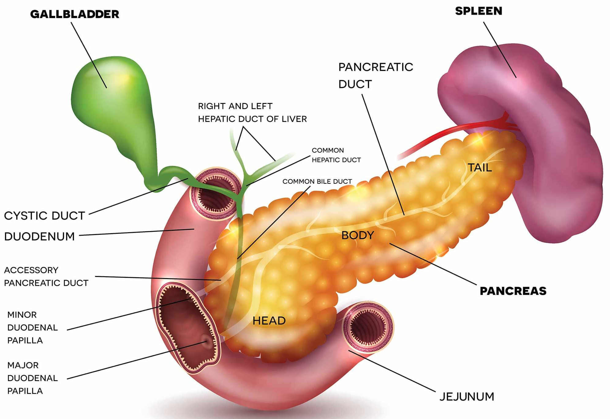

Aperçu des axes de recherche sur le cancer du pancréas

L'obésité et le diabète contribuent au développement du cancer du pancréas à travers plusieurs mécanismes interconnectés :
-
Perturbations Métaboliques :
- L'excès de nutriments et de métabolites (lipides, glucose, acides biliaires) crée un environnement favorable au cancer
- Le métabolisme altéré conduit à des dommages de l'ADN et au stress cellulaire
- Les produits de glycation avancée (AGE) s'accumulent et favorisent l'inflammation
-
Déséquilibres Hormonaux :
- L'insulinorésistance et l'hyperinsulinémie activent des voies favorisant le cancer
- La perturbation des hormones gastro-intestinales comme la gastrine et la cholécystokinine affecte la fonction pancréatique
- La dérégulation des hormones sexuelles contribue au risque de cancer
-
Modifications du Microbiome :
- L'obésité et le diabète altèrent la composition des bactéries intestinales
- Le microbiome modifié favorise l'inflammation
- Les métabolites et toxines bactériennes peuvent endommager le tissu pancréatique
-
Effets sur le Microenvironnement Tumoral :
- Augmentation de l'inflammation et du stress oxydatif
- Infiltration anormale des cellules immunitaires
- Fibrose accrue et remodelage tissulaire
- Perturbation de la matrice extracellulaire
-
Processus Cellulaires :
- Dysfonctionnement de l'autophagie
- Stress du réticulum endoplasmique
- Transition épithélio-mésenchymateuse
- Sécrétion anormale d'exosomes
La revue souligne comment ces mécanismes forment un réseau complexe où chaque facteur peut en amplifier d'autres, créant des conditions favorables à l'initiation et à la progression du cancer du pancréas. Comprendre ces interconnexions est crucial pour développer des stratégies de prévention et des traitements.
Ce travail met en évidence trois implications majeures pour le domaine :
- Opportunités de prévention par une meilleure gestion de l'obésité et du diabète
- Nécessité de méthodes de détection précoce dans les populations à haut risque
- Cibles thérapeutiques potentielles basées sur ces mécanismes moléculaires
graph TB
Exosomes[Exosomes] --> Obesity
Exosomes --> PancreaticCancer[Pancreatic Cancer]
Exosomes --> Diabetes
subgraph RNA_Content[RNA Content Analysis]
miRNA[miRNA]
circRNA[circRNA]
lncRNA[lncRNA]
end
Obesity --> RNA_Content
PancreaticCancer --> RNA_Content
Diabetes --> RNA_Content
miRNA --> GeneRegulation[Gene Regulation]
circRNA --> MetabolicPathways[Metabolic Pathways]
lncRNA --> CellularProcesses[Cellular Processes]